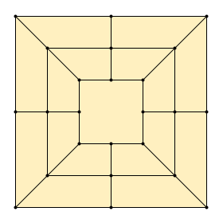

Morabaraba / 12 Men’s Morris

Setup
- 2 Players - 12 pieces each - black / white
- Pieces may sit on 24 points (where lines meet)
- Game begins with empty game board as shown
Goal
Build “mills” to remove opponent’s pieces, or lock them in.
The game ends when one player has only 2 pieces left or is locked
in and cannot move anymore.
Closing a Mill
- 3 pieces of the same colour on a straight line are called a "mill".
-
Whenever you newly create such a pattern, you have "closed a mill"
and immediately remove one of the opponent's pieces from the board.
Removed pieces are excluded from the game and cannot not be used again.
- Note: Pieces that are themselves part of a mill can only be removed if
no other pieces are available.
- If you manage to close 2 mills at once, you still only remove one piece.
The closing of a mill may occur at any time throughout the following game phases:
Phase 1 - Placing pieces
- Take turns placing your pieces on any empty board positions.
- Continue until all pieces have been placed.
Phase 2 - Moving pieces
Now on each turn move one of your pieces along a line to an adjacent empty point.
Flying
A player who has exactly 3 pieces left on the board can “fly”:
On each turn, pick up up one of your pieces and put it on an empty position
anywhere on the board.
If the other player still has more than 3 pieces on the board, he/she
continues to move pieces as mentioned above.
Strategy tip
Move a piece from a closed mill to open it. On your next turn
close it again and remove an opponent's piece.
The opponent may interfere by moving a piece into the gap of
the opened mill.